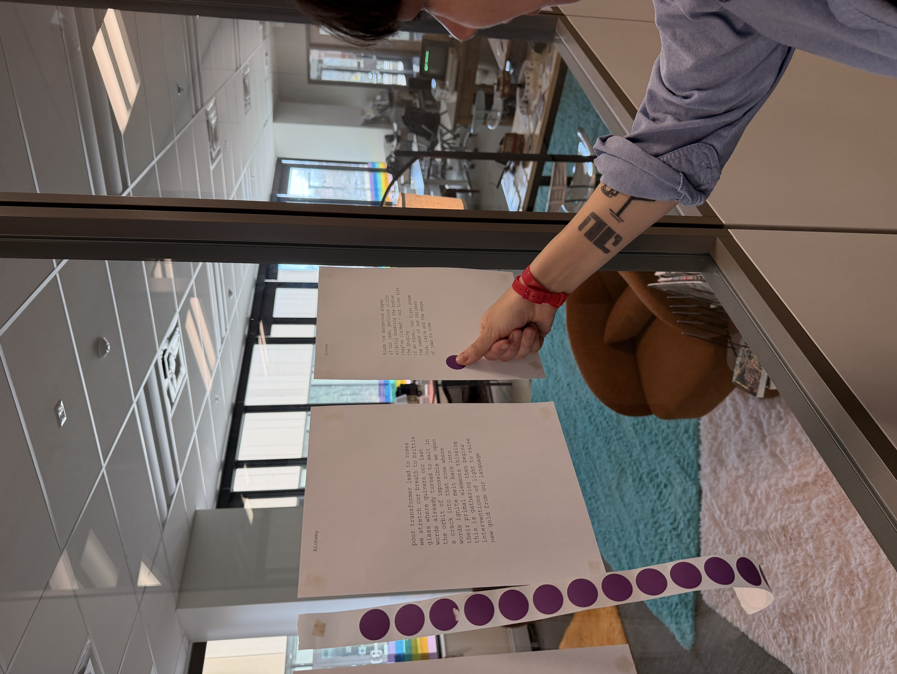

Reverse.exe

Reverse.exe is the fifth installment of Singulars, the live poetry duel where a fine-tuned model and I write on the same theme and the audience votes for the one that moves them most. It was held at the Media Archaeology Lab at the University of Colorado Boulder, as part of their 2025/2026 Counter Computing residency.
The lab keeps a working collection of hundreds of analog and digital devices from the late nineteenth century to today. Old keyboards, old screens, old grammars of input. I wrote on Liberation, Index, Aged, Tinder, Mortality, Dreams, Alchemy, The Winter in the Summer, Academic Life. The machine wrote on the same. Both poems went up on the wall. Visitors moved between objects from a hundred years apart and a duel running live in the middle of them.
The lock was never the problem. The problem was the door believing in itself. I walked through the wall instead, soft as a rumor, certain as salt. The model on Liberation. Mine on the same theme: we’ll eat the sun, our skins shades of thunder, hair tangled like violent joy, fangs red given we bit our tongues and the only language we now speak is blood. The audience voted by ducking under glass cases and shuffling between sticker piles. Each side gathering dots like dust.
The lab’s prompt for the year was Counter Computing, Alternative Imaginaries. Singulars fits that brief sideways. The piece is not exactly a glitch, not exactly a hack, but a refusal of the dominant narrative that the language model is either threat or tool. I treat it as a sparring partner. Sometimes a school. Sometimes a flat mirror that schools me back. I have been humbled many times sitting in front of one of these.
If the human wins, those poems train the next model. If the machine wins, I read it. I borrow. I try again next round. Reverse.exe took its name seriously: a piece about unwinding, about the loser’s memory becoming the winner’s next sentence. The whole apparatus runs backward through itself.
Surrounded by media that have already been forgotten, the duel stops feeling like a contest. It feels like a brief, lit moment where two strange writers happen to be looking at the same word.